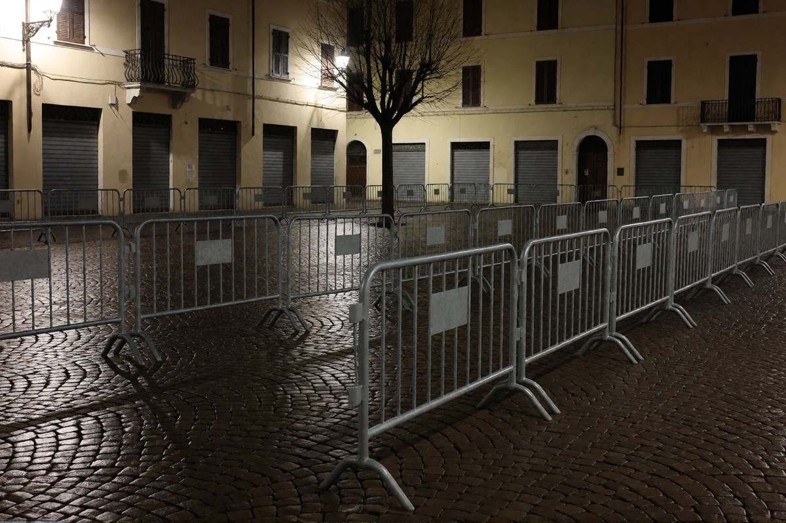

Politica italiana · 25 novembre 2026
«Decreto maranza», sicurezza o libertà. L'editoriale del Riformista

Sul Riformista Graziano Montanaro, per anni alla Digos di Roma, mette in fila coltelli, minori e cortei e non dà una sentenza. L'editoriale per gli abbonati, con il commento dell'autore.
di Franco Zanghì
Si può chiedere più sicurezza senza perdere un po' di libertà? È la domanda che pone sul Riformista del 25 novembre 2026 Graziano Montanaro, che scrive di aver lavorato per anni alla Digos di Roma, in un pezzo sul cosiddetto «decreto maranza».
Nei documenti ufficiali quel nome non esiste, e lo avverte lui per primo: è il decreto-legge 24 febbraio 2026, numero 23, convertito dalla legge 54 del 24 aprile. Il numero conta, perché i giornali hanno chiamato così almeno tre provvedimenti diversi.
Che cosa prevede
Sui coltelli: chi è trovato fuori casa con una lama affilata o appuntita più lunga di 8 centimetri, senza giustificato motivo, rischia da sei mesi a tre anni. Con la conversione la soglia è scesa a 5 centimetri per le lame pieghevoli. Vietata anche la vendita ai minorenni, in negozio, online e fra privati.
Sulle famiglie: se un minorenne, dopo un ammonimento del questore, commette certi reati, a chi esercita la responsabilità genitoriale il prefetto applica una sanzione da 200 a 1.000 euro.
Sulle città: i prefetti individuano le zone colpite da reati gravi o ripetuti e possono allontanarne chi è stato denunciato negli ultimi cinque anni per determinati reati. Sui cortei: davanti a un pericolo attuale per l'ordine pubblico la polizia può accompagnare in ufficio chi ritiene pericoloso per la manifestazione, non oltre dodici ore e avvisando subito il pubblico ministero.
Montanaro non dà una sentenza: per ogni misura mette accanto le ragioni del governo e quelle dei critici, e conclude che non bastano divieti e sanzioni, servono prevenzione, educazione e uno Stato presente dove il disagio cresce.
Come la vedo io
Sui coltelli sto con il governo. Un ragazzo che esce la sera con una lama in tasca non è più libero: ha già messo in conto di usarla. E il divieto di vendita ai minori è buon senso, non repressione.
Sui genitori ci vuole misura. L'educazione comincia in casa, ma una multa a una famiglia che fa già fatica colpisce chi ha meno strumenti, non chi ha meno voglia: funzionerà solo insieme alla scuola e ai servizi sociali.
E sui cortei la distinzione è tutto. Dodici ore, con il pubblico ministero avvisato subito, sono un limite vero, ma il potere di fermare qualcuno prima che faccia qualcosa va usato con il bisturi, non con l'accetta. Sull'ultima riga Montanaro ha ragione: lo Stato si vede quando c'è, nei quartieri, nelle scuole, negli stadi. Le leggi servono, la presenza di più. Quanta libertà siamo disposti a dare in cambio di città più sicure, e fino a che punto?
Fonti
- Graziano Montanaro, «“Decreto maranza”, stretta su coltelli, minori e cortei: sicurezza o rischio per le libertà?», Il Riformista, 25 novembre 2026
- Decreto-legge 24 febbraio 2026, n. 23, in Gazzetta Ufficiale n. 45 del 24 febbraio 2026
- Ministero dell'Interno, «Convertito in legge il DL 23/2026 su sicurezza e migrazione»
- ANCI Lombardia, «Nota sintetica. Decreto-legge 24 febbraio 2026, n. 23»
Questo articolo racconta un editoriale: la ricostruzione delle misure, i giudizi e il racconto sull'esperienza alla Digos sono di Graziano Montanaro e vanno letti come opinioni e testimonianza del loro autore, non come fatti accertati. Le norme citate sono state verificate sul testo del decreto-legge 23/2026 in Gazzetta Ufficiale e sulla legge di conversione 54/2026. L'espressione «decreto maranza» non compare in alcun documento ufficiale ed è usata dai giornali anche per altri provvedimenti del 2026.